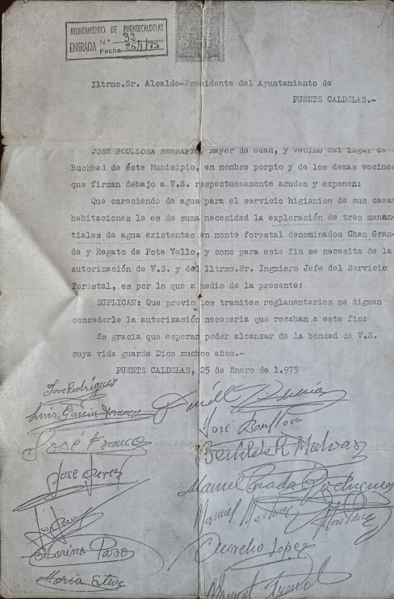

Menú A comunidade Novas Directiva A Comunidade de Augas O traballo dos nosos devanceiros Pepe Serrapio foi un dos artífices mais activos para que Buchabade levara auga as casas no ano 75. Tamén relata que toda a veciñanza apoiou económicamente e con diñeiro captar dous manantiais, facer un depósito e as distribucións até as casas, quen sabe que traballiños pasaron! A dia de hoxe seu traballo segue sendo útil, os manatiais e o depósito seguen funcionando, o noso agradecemento nunca será dabondo. Unha nova xestión da auga Durante moitos anos a auga continuou fluindo ás casas. Dos anos 2010 a 2012 renovouse toda a distribución de baixa (depósito-casas) sustituindo as vellas tuberías de PVC polas de PE negro. A inversión rondou os 40000€, satisfeito con fondos cumunais. No ano 2017, nun escenario de seca extraordinaria, pretenderon facer un transvasamento de auga dende o Río Verdugo a Vigo, isto fixo que no medio da resposta social a esta obra xorderan as preguntas: como xestionamos a auga nas traídas locais? estamos preparados para as secas? somos eficientes? A resposta a esta pregunta veu dunha viaxe a Tomiño co Presidente de Augas Miguel Calviño. Alí vimos cara onde tiñamos que ir e cales eran os novos deberes que había que facer na nosa traída. Asociámonos a COXAPO (agrupa a máis de 180 Traídas veciñais), modernizamos as instalacións dos depósitos, filtramos a auga que ven dos manantiais, dotámonos de clorador, temos información vía satélite a tempo real de niveis do depósito, do consumo minuto a minuto, do cloro, da circulación de xente, e axeitámonos á normativa con moitos mais detalles. Invertíronse nesta andaina máis de 40000€, e seguimos... E agora que toca? O que se fixo foi moito pero temos que seguir adaptándonos aos novos escenarios. O quecemento global e a impredicibilidade climatolóxica marcan a folla de ruta. Todo indica que as secas van ser máis persistentes e que as normativas van ser máis restrictivas no uso da auga. Adaptarnos a este escenario parece o máis acaído. Neste sentido xa temos en marcha o proxecto "Pozo". A oferta de auga até hoxe depende dos manantiais superficiais do monte. A grande vantaxe deles é que non precisan bombeo e teñen boa calidade de potabilidade. A debilidade é que secan antes que as augas profundas. A estratexia de facer un pozo non pode ser para aumentar o consumo de auga senon para aumentar a seguridade en caso de seca e disminuir a presión sobre os acuíferos do monte. Os seguintes proxectos, máis a medio plazo e dependentes da financiación serían mellorar a xestión dotándonos de contadores intelixentes nas casas que permitan controlar as fugas e os excesos de consumo en tempo real. Tamén disminuir o impacto sobre os acuíferos superficiais e garantizar un caudal ecolóxico nos mesmos ademáis dunha xestión progresiva de uso nos manantiais máis altos que permita que sigan alimentando aos inferiores. Novas da Comunidade de Augas Directiva PresidenteIntegrante 1 VicepresidenteIntegrante 2 SecretarioIntegrante 3 